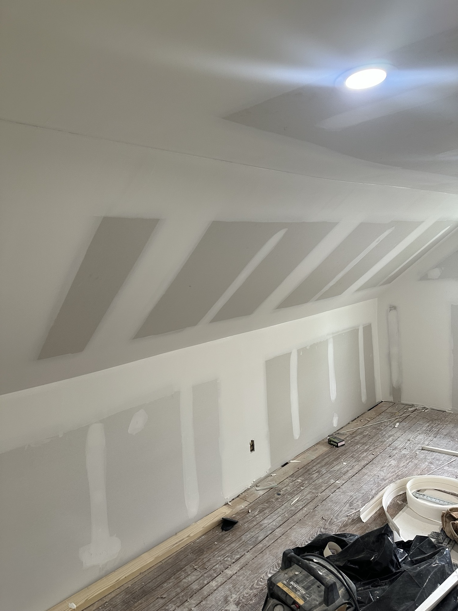
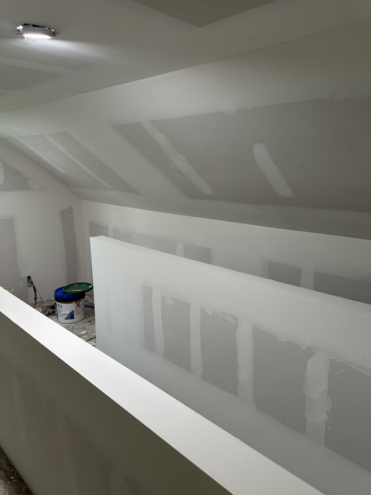
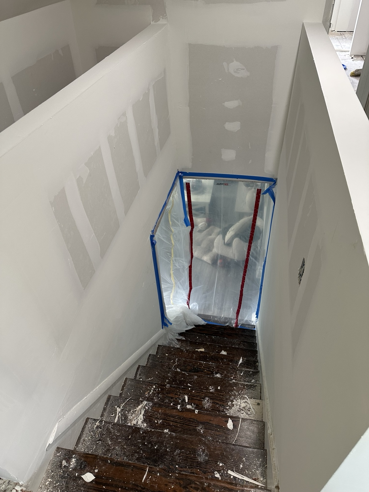

Drywall Repair in Cinnaminson, NJ
Need drywall repair around Route 130, Route 73, Riverton Road, Palmyra, Riverton, Delran, Moorestown, and the Delaware River side of Burlington County? South Jersey Repairs helps with wall patching, ceiling drywall repair, damaged sheetrock, and paint-ready sanding in Cinnaminson, NJ.
We work with homeowners, landlords, rental property owners, real estate agents, and property managers who need clear pricing and a clean, paint-ready repair.
Fastest quote: text 2-3 photos, your town, and whether it is wall damage, ceiling damage, water damage, or a hole patch.

Call or text photos for a free drywall repair quote.
Drywall Repair, Ceiling Repair, and Wall Patching in Cinnaminson
If you need drywall repair in Cinnaminson, South Jersey Repairs focuses on the work that makes walls and ceilings look clean again: hole patching, cracked drywall repair, ceiling repair, water damage drywall repair, drywall installation, sanding, finishing, and paint-ready prep.
Many Cinnaminson calls come from landlord punch lists, seller prep, and everyday home repairs. We keep the process simple: send photos, share the address or town, and describe the drywall problem so we can price the job clearly.
Drywall Repair
Wall holes, dents, nail pops, damaged sheetrock, loose tape, corner damage, and patch repairs for homes and rentals in Cinnaminson.
Ceiling Repair
Ceiling drywall repair, water stains after leaks, cracked seams, sagging patch areas, and ceiling compound work where the drywall can be repaired.
Installation and Finishing
Small drywall installation, replacement sections, joint compound, sanding, feathering, and drywall finishing for paint-ready walls.
Local Drywall Jobs We Handle
For Cinnaminson customers, the most common requests are holes, cracked seams, nail pops, and damaged sheetrock. South Jersey Repairs specializes in drywall repair but also provides handyman and property maintenance services when the job has a wider punch list.
- Drywall repair and sheetrock repair
- Ceiling repair and ceiling patching
- Hole patching from doors, anchors, and move-outs
- Water damage drywall repair after leaks are fixed
- Drywall installation for small areas and repairs
- Drywall finishing, sanding, and paint-ready prep
- Rental turnover and seller prep drywall repairs
Cinnaminson and Nearby Areas
We serve Cinnaminson and nearby South Jersey areas including Riverton, Delran, Moorestown, and Burlington County. This page is written for local drywall repair searches, not a generic county page.
Real Drywall Repair Photos
These are real drywall project photos used across the South Jersey Repairs site so each local page shows actual wall patching, compound work, sanding, or ceiling repair details.


Related South Jersey Repairs Services
Many drywall jobs connect to other property repairs. These links help customers and search engines understand the main service structure.
Why Call South Jersey Repairs?
South Jersey Repairs is built around drywall repair first, with practical handyman and property maintenance support for homeowners, landlords, rental property owners, real estate agents, and property managers.
That means one local repair company can handle the drywall patch and also help with small related punch-list items when needed.
Need Drywall Repair in Cinnaminson, NJ?
Call or text photos for a free drywall repair quote. Include your town, a few photos of the damaged wall or ceiling, and whether you need drywall repair, ceiling repair, hole patching, water damage drywall repair, drywall installation, or drywall finishing.